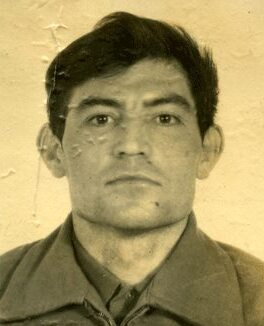
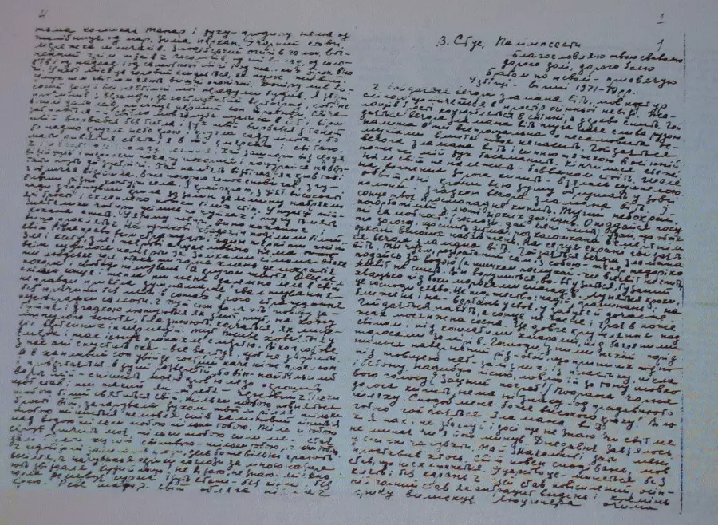

В історії бездержавних націй література ніколи не функціонує як ізольований естетичний феномен. За умов відсутності власних політичних інституцій, армії та державного апарату, саме мова і література перебирають на себе функції національного самозбереження, перетворюючись на головний майданчик екзистенційного та політичного утвердження. Фундаментальний злочин російського імперіалізму — у його царській, радянській та сучасній модифікаціях — полягає у свідомому, систематичному та насильницькому запереченні цього факту.
Російська імперська доктрина століттями конструювала штучну парадигму, у якій культура підкореного народу мала право на існування винятково в статусі маргінального, етнографічного релікту. Відповідно до цієї логіки, українська література повинна була обмежуватися побутовими, сільськими темами, залишаючись позбавленою інтелектуальної самостійності, урбаністичного розвитку та, найголовніше, волі до державотворення.

Спроби деполітизувати українську культуру, перетворити її на безпечний фольклорний додаток до так званої "великої російської культури", супроводжувалися жорстоким викоріненням будь-яких проявів національної свідомості. З погляду імперії, український письменник мав право бути лише співцем абстрактної краси чи соціалістичного будівництва; як тільки він торкався питань національного буття, він таврувався як "буржуазний націоналіст" і підлягав ліквідації.
Ця стратегія заперечення зв'язку між літературою та політикою є злочином найвищого порядку, оскільки вона спрямована на денаціоналізацію — знищення здатності нації бути суб'єктом історичного процесу. Забираючи в літератури політичний вимір, Росія намагалася ліквідувати саму здатність українців до кавзальної причиновості: здатності творити власну історію, а не бути об'єктом чужого впливу.
Політизована література продукує ідею влади, суверенітету та національного інтересу. Деполітизована література продукує рабську покору та ментальну провінційність. Саме тому утвердження аполітичності мистецтва в умовах окупації є формою колабораціонізму, а російська пропаганда, яка нав'язує тезу про "мистецтво поза політикою", здійснює акт інформаційного та психологічного терору.
Життєвий шлях і творчість Василя Стуса становлять собою категоричне, безкомпромісне заперечення цієї імперської доктрини. Його постать виходить далеко за межі суто літературного процесу, перетворюючись на феномен незламного національного чину. Стус абсолютно чітко усвідомлював, що в умовах тоталітаризму написання текстів рідною мовою, утвердження людської гідності та відмова від ідеологічної мімікрії є актами найвищої політичної непокори. Його діяльність була спрямована не на створення комфортних естетичних форм, а на формування твердого національного характеру, здатного протистояти асиміляційному тиску.
Справа Василя Стуса — це не просто хроніка судових переслідувань окремого дисидента. Це фундаментальний історичний зріз, у якому оголюється вся анатомія російського тоталітаризму. Аналіз його біографії, філософської концепції трагічного стоїцизму, відкритого листа Я обвинувачую та судового процесу 1980 року дає змогу осягнути механізми функціонування репресивної машини та зрозуміти безальтернативність безкомпромісної боротьби. Пам'ять про Стуса є не питанням історичної ностальгії, а абсолютним імперативом для збереження життєздатності української нації у її сучасному змагу з російською агресією.